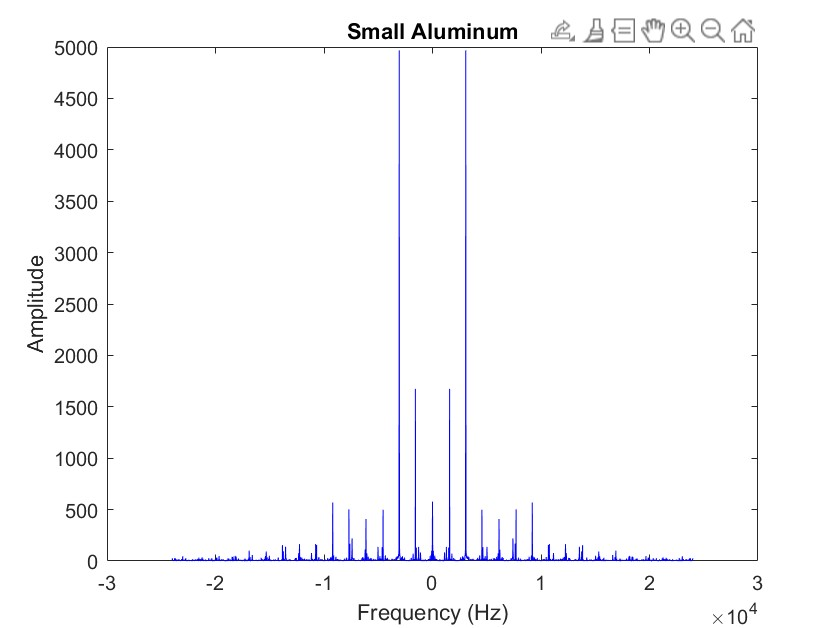
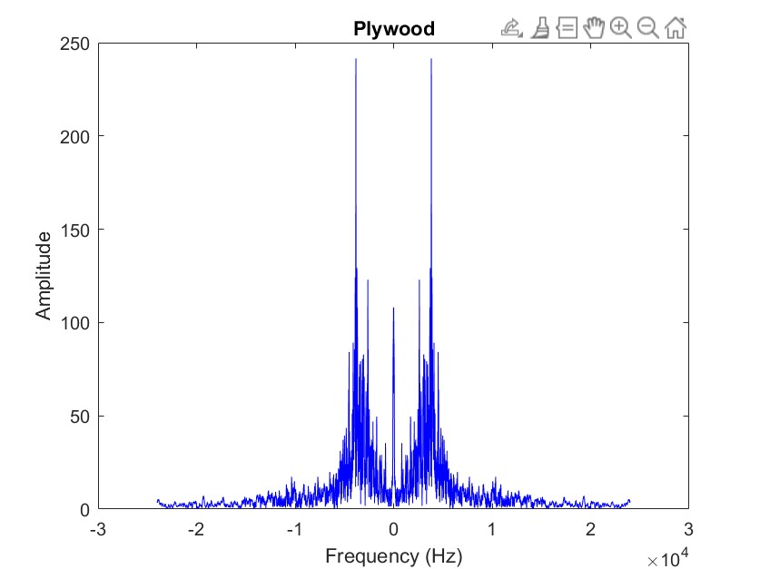

To find out the most harmonic tonewood for musical instruments.
INTRODUCTION
Why and how would you find it meaningful
We're aiming to help luthiers, other musical instruments designers and acoustic engineers to test, and find out the best optimal wood materials for better quality musical instruments that serve performers' requirements.
In order to make better quality musical instruments, we aim to find out the materials that will produce the most harmonic sound when they’re tapped with an instrumental mallet. Instead of taking measurements on the physical features of wood pieces such as density, the Young’s Modulus and etc., we extracted acoustic data from experiments with the discrete fourier transform algorithm, and we graded the wood quality from pure sound features by diving into the distribution of frequencies.
DATA COLLECTION
For the material selection, we have chosen an assortment of materials to test ranging from metal scraps scavenged from university stock markets to specimens of tonewood shipped all the way from Alaska and South America.
To keep a low noise level during recording, we went through the sound experiment in a recording room with a Rhode shotgun microphone. For each one of our experimental wood pieces, we took measurements to tap them at the best optimal positions so that their sounding features would stand out. To serve this purpose, we minimized the damping effect when we’re holding the test pieces by hand, and we carefully avoided tapping near to the edges of the test pieces to maximize the resonance of the wood itself.
After the recording, we extracted the sound track saved in the WAV format for further analysis in MATLAB.
HOW DID WE APPROACH IT?
Once we have the data, we separate out the actual noise of the materials being hit from the background noise by looking at the amplitude of each measured value and finding where it spikes above the ambient noise level in the room. We then determined when the sound sample was over by waiting until several data points in a row fell below room ambient noise levels.
From there we took the sound samples and applied a fourier transformation. We accounted for the sampling rate and shifted the x axis to appropriately show Hz and it was immediately clear that the different pieces of material had different sounds. Some graphs like the tonewood had clearly defined frequencies while other materials such as the piece of acrylic were a jumble of random frequencies in random order.
It was visually clear that there was a distinction between the materials we expected to sound better and worse, but we would need to do more work in order to quantify that. For the sake of simplicity and since all of the frequencies below zero are the same as those above, we started by removing the first half of the data and only looking at frequencies above 0 Hz. Next we used a MatLab function that helps to pull out peaks in the data to find all of the major frequencies present in the sound sample. We took the first frequency and multiplied it by the position of each other peak (Second, Third, etc.) and compared that value to that actual frequency we recorded during our data collection. The measure of how close the measured frequencies are to the actual overtones or exact multiples of the primary frequency is what we were after. We took the error values for each overtone and used those values to compare the audio quality of each sample.
As we expected, our results showed a clear difference in the frequencies across different materials. For the most part, materials that are used to make instruments performed better than those that are not.
After plotting the frequencies of each sample and visually determining which graphs had the most evenly spaced peaks and therefore sounded the best, we calculated the error values for each overtone. The samples with the lowest error values were tonewood, the smaller piece of aluminum, and the larger piece of maple. While we were expecting tonewood and maple to produce the best results as they are both high quality woods, aluminum having such a low error value was a bit unexpected. We believe the reason that aluminum performed so well is that the smaller piece was the thickest material by fair which caused it to produce the longest sound, giving more data to analyze. Aluminum can also be used for some instruments such as xylophones.
The samples that had the highest error values and sounded the worst were acrylic, plywood, and fretboard. Acrylic and plywood were expected to perform poorly as they are not used for musical instruments, but fretboard is. We determined that the reason the fretboard did not perform well was likely because the piece we used was very thin and had grooves in it.
RESULTS
RESULTS OF DIFFERENT TYPES OF WOOD


NEXT STEP
In the future, to better test our algorithm, we would work on further minimizing potential errors in our data collection. Many of the samples we used were different sizes, which impacted the samples we collected. In order to ensure that the difference in frequency we measured was due to the material not other factors. If we tested more samples, we would make sure that they were all the same dimensions.
We would also like to find a better method for collecting data. While the microphone we used was able to record the sound in a way that was usable, the process of setting it up was inefficient. We were unable to connect the microphone directly to our laptops, so we needed to record our data using a camera then transfer the data to a computer to analyze after it was collected. It would have saved a lot of time and been much easier to record data on our laptops.
Another step we would like to take in the future is refactoring our code into an app. This app would allow people that are crafting musical instruments to record themself tapping different materials, use our algorithm to analyze the differences between these sounds, and tell the user which material they should select.
ABOUT US
Andrew DeCandia Olin '24 Sustainability Engineer
Audrey Abraham Olin '24 Mechanical Engineer
Zi Xiong Olin '24 Electrical and Computer Engineer
NEXT STEP
REFERENCES
Sources Albersheim, G. (1948). Overtones and Music Theory. Bulletin of the American Musicological Society, 11/12/13, 69–71. https://doi.org/10.2307/829299 “Final Project Description.” Quantitative Engineering Analysis III, Olin College, 2021, pp. 153–168, drive.google.com/file/d/1CGxmMxQg76xaS6-GS44xWf6Bftgfudg_/view Oregon State University. Forest Products Laboratory, U.S. Department of Agriculture, 2 Nov. 1965, https://ir.library.oregonstate.edu/downloads/h702q7701. Wegst, Ulrike G. K. “Wood for Sound.” Botanical Society of America, John Wiley & Sons, Ltd, 1 Oct. 2006, https://bsapubs.onlinelibrary.wiley.com/doi/10.3732/ajb.93.10.1439.